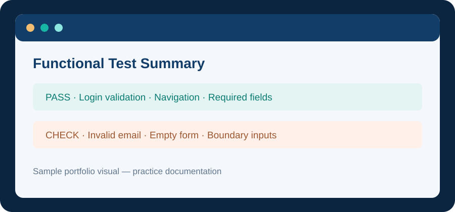

Manual TestingWeb Application Functional Testing
Practised testing key website features using positive and negative scenarios. Focus areas included navigation, form inputs, required fields, validation messages and expected page behaviour.
Testing deliverables
- Test scenarios and test cases.
- Expected versus actual results.
- Defect observations with reproducible steps.